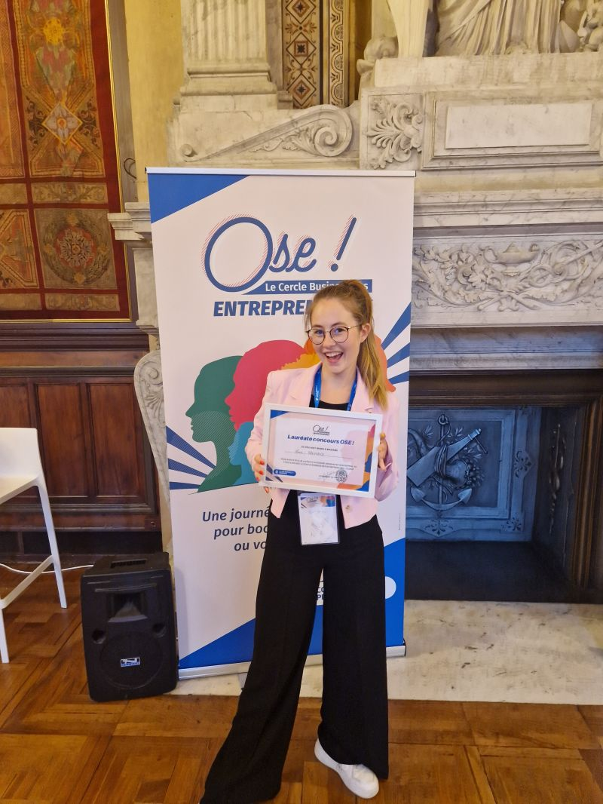

Top 50 social intelligence providers worldwide, SI Lab 2024
STOP GUESSING, START LISTENING.
Licter is the Social Data Intelligence consultancy. We turn data from the world's largest panel – social media, search, generative AI – into decisions.
NOTED - WE GET BACK TO YOU WITHIN 24 HOURS
Trusted by 50+ organisations, from CAC 40 groups to institutions

THREE WAYS TO WORK WITH US
Buy answers, not licences.
Fixed fee, unlimited studies, no commitment. Consultants frame the question, configure the collection and produce the analysis.
Your analyses, run by experts
A fixed monthly fee, unlimited studies, no tool licence to staff.
02 — VIGIE 360Alerts in 15 minutes, 24/7
Your brand, your executives and your markets, in 20+ languages.
03 — LISTENING AS A SERVICEMake your platform produce decisions
We take over the taxonomy, the dashboards and the recurring analyses.
OUR USE CASES
EVERY BUSINESS QUESTION HAS A DATA ANSWER.
We help brands tap into the data of the world's largest panel.
Three of the twelve questions social data answers better than a survey.
HOW AN ENGAGEMENT RUNS
Four steps, no black box.
01Framing
We start from the business decision, not the keyword list. What will change depending on the answer, and who has to be convinced by it?
02Collection
Social listening, audience intelligence, digital panel and search listening — combined, and filtered by consultants rather than by a dashboard default.
03Analysis
Proprietary algorithms profile the audiences; analysts read them against your market, in the language that market actually speaks.
04Decision
A readout your teams can act on, recurring monitoring where it matters, and alerts when something moves.
BEFORE YOU ASK
Five questions we get every week.
Is this social listening, or something else?
Social listening is one of four layers. On its own it tells you what is being said. We add audience intelligence (who is behind the accounts), a behavioural panel of about three billion consumers, and search listening. Most questions need at least two.
Do we need to own a listening platform first?
No. We work with the leading platforms and our own algorithms; the licence is ours, not a prerequisite for you. If you already pay for one and under-use it, that is exactly what Social Listening as a Service is for.
How long until the first usable answer?
A focused read is a matter of days rather than weeks. A full diagnostic of an existing setup takes two to three weeks. Continuous monitoring starts alerting as soon as the perimeter is configured.
Which markets and languages do you cover?
Monitoring runs in more than twenty languages, and our consultants work in Mandarin, English, Spanish, Hindi, Cantonese and Arabic. A market read through machine translation is a market read half-wrong.
What does it cost?
A fixed monthly fee, with unlimited studies inside it, and no commitment. The exact level depends on the perimeter — markets, languages, monitoring. Thirty minutes is usually enough to give you a number.
THREE WAYS TO START
Pick the one that matches where you are.
Just exploring
The twelve questions social data answers better than a survey, and the method behind each one.
Get the free guideYou already run listening
An independent diagnostic: audit, maturity score on six dimensions, quick wins and a roadmap.
Request a diagnosticYou have a decision to make
Thirty minutes with a consultant. You describe the decision, we say what the data can settle.
Book a meeting